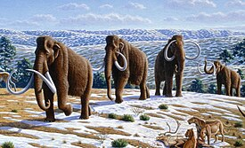
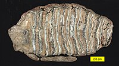

Мамонты
Ма́монты (лат. Mammuthus) — вымерший род млекопитающих отряда хоботных, существовавший в период с плиоцена (5 млн лет назад) по начало голоцена (ок. 4 тыс. лет назад). Различные их виды населяли биотопы Африки, Европы, Азии и Северной Америки. К семейству, в которое они входили — слоновые — также относятся два рода современных слонов вместе с их предками. Генетически мамонты были ближе к современным азиатским слонам, нежели к африканским. Животные обычно обладали длинными изогнутыми бивнями, а виды, обитающие в полярных районах — длинной шерстью. Они достигали высоты 5,5 метров и массы тела 14—15 тонн; таким образом, мамонты были в два раза тяжелее самых крупных современных наземных млекопитающих — африканских слонов.
Древнейший представитель рода, Mammuthus subplanifrons, появился в начале плиоцена, около 5 миллионов лет назад, на территории современной Южной и Восточной Африки. Потомки этих мамонтов, в том числе южный мамонт, продолжали расселяться на север, их видовое разнообразие росло, и в конечном итоге охватило большую часть Евразии. Около 1,5—1,3 миллиона лет назад мамонты достигли и Северной Америки, эволюционировав в колумбийского мамонта. Последний вид рода, шерстистый мамонт (Mammuthus primigenius), появился около 400 000 лет назад на территории Восточной Азии и процветал вплоть до появления первых цивилизаций: некоторые популяции сохранились на острове Врангеля в Северном Ледовитом океане, а также, возможно, на полуострове Таймыр материковой части Сибири приблизительно до времён возведения древнеегипетской пирамиды Хеопса, то есть вид вымер уже в историческое время, приблизительно 3700—4000 лет назад.

Шерстистые мамонты в ландшафте позднего плейстоцена на севере Испании в представлении художника
Царство: Животные
Тип: Хордовые
Класс: Млекопитающие
Отряд: Хоботные
Семейство: Слоновые
Род: † Мамонты
Международное научное название
Mammuthus Brookes, 1828
Виды
† Mammuthus africanavus (Arambourg, 1952)
† Mammuthus armeniacus (Falconer, 1857)
† Mammuthus columbi (Falconer, 1875) — Мамонт Колумба
† Mammuthus exilis (Vincent J. Maglio), 1970 — Карликовый мамонт
† Mammuthus fraasi
† Mammuthus hayi (Barbour, 1915)
† Mammuthus imperator (Leidy, 1858)
† Mammuthus jeffersonii
† Mammuthus lamarmorae (Major, 1883)
† Mammuthus meridionalis (Nesti, 1825) — Южный мамонт
† Mammuthus primigenius (Blumenbach, 1799) — Шерстистый мамонт
† Mammuthus rumanus (Stefanescu, 1924)
† Mammuthus subplanifrons (Osborn, 1928)
† Mammuthus sungari (Zhou, M.Z, 1959)
† Mammuthus trogontherii (Polig, 1885) — Степной мамонт
†Mammuthus creticus.

Русское слово «мамонт» предположительно происходит от манс. манг онт — «земляной рог». Манси первоначально называли так не всё животное, а только его бивни, которые были издавна известны на Севере и в Сибири и вошли в фольклор многих народов. Предлагался также ряд других вариантов этимологии[1][2].
Первоначально заимствованное слово пришло в русский язык в форме мамут или мамот. Впервые оно фиксируется на рубеже XVI—XVII веков, в период активного освоения русскими Сибири[1]. В таком виде слово было заимствовано из русского в другие мировые языки — англ. mammoth[3], нем. Mammut и научно-латинское mammuthus, сконструированное учёными по образцу европейских языков, и др.[